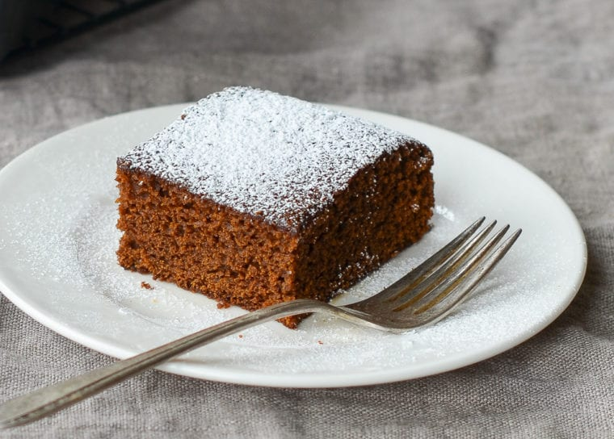

Home

Description
Old-fashioned Gingerbread that is loved by many.
This treat is sweet and dense combining the flavours of molasses, cloves, and brown sugar into a dish that will delight many
Ingredients
- 1¾ cups all-purpose flour
- 1 teaspoon baking soda
- ½ teaspoon salt
- 2 teaspoons ground ginger
- 1 teaspoon ground cinnamon
- ¼ teaspoon ground cloves
- 4 tablespoons unsalted butter, melted
- ⅔ cup packed dark brown sugar
- ⅔ cup mild-flavored molasses
- ⅔ cup boiling water
- 1 large egg
Steps
- Preheat oven to 350°F. Grease a 9-in square metal cake pan with nonstick cooking spray with flour, such as Baker's Joy. (Alternatively, grease the pan with butter and lightly coat with flour.)
- In a medium bowl, whisk together flour, baking soda, salt, ginger, cinnamon and cloves. Set aside.
- In a large bowl, whisk together the melted butter, brown sugar, molasses, and boiling water. When the mixture is luke warm, whisk in the egg.
- Add the dry ingredients to the wet ingredients and whisk until just combined and there are no more lumps. Pour the batter into the prepared pan and bake for 30 to 35 minutes, or until the edges look dark and the middle feels firm to the touch. Set the pan on a rack to cool slightly, then cut into squares and serve. This cake is best served warm out of the oven or reheated.
- Freezer-Friendly Instructions: The gingerbread can be frozen for up to 3 months. After it is completely cooled, double-wrap it securely with aluminum foil or plastic freezer wrap, or place it in heavy-duty freezer bag. Thaw overnight on the countertop before serving.